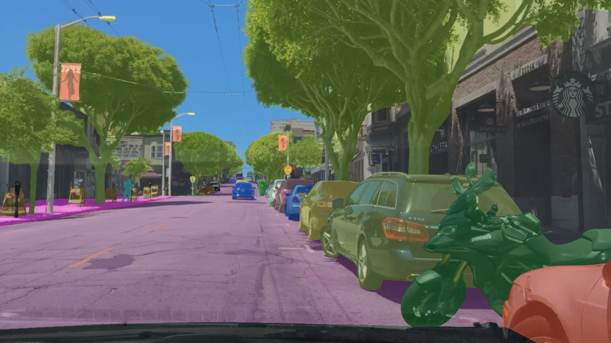
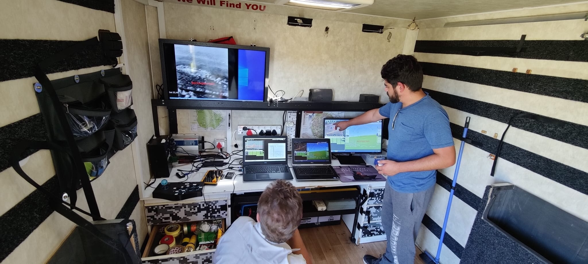

All challenges
Category

Starting Soon
AI for Forest Elephants 2
Monitor Elephant rumbles and gunshots using 24h audio recordings to help conservation efforts from researchers

In Progress
AI for Nepali Farmers
Empowering Nepali farmers: Revolutionizing loan management with AI-enabled data digitization

Completed
AI for Bears
Classifying and identifying bears on low-powered edge-hardware

Completed
AI against Oil Spills 2
Detect small-scale oil spills on (RGB) drone video footage and estimate the volume and type of oil spilled.

Completed
AI for Coral Reefs 2
Use Computer Vision to segment coral reefs in benthic imagery and measure long-term growth or loss of coral cover in marine protected areas

Completed
AI for Turtles
Develop computer vision software that can recognise and distinguish individual turtles through automated identification.

Completed
AI for Eagles
Classify the species and age of eagles to aid conservationists in monitoring their population health

Completed
AI for Road Safety
Make Indian roads safer for the public, by reducing traffic accidents using AI-based collision avoidance systems.

Completed
AI against Toxic Clouds
Use Computer Vision to detect toxic clouds emitted by large factories and report the authorities on the sightings

Completed
AI for Air Quality
Automated detection of atmospheric NO2 and CH4 plumes over Greater Kampala metropolitan area using high-resolution satellite observations from TROPOMI and Deep learning methods

Completed
AI for Impact Assessment
Build NLP models to classify customer product descriptions to estimate their impact on the environment.

In Progress
AI for Pelicans
Detect and classify the pelican population of the Danube Delta in Romania to evaluate the breeding population based on aerial photographs.

Completed
AI for European Wildlife
Build computer vision models to identify different species of European wildlife to improve population monitoring.

Completed
AI against Diabetes
Construct Computer vision models that estimate the risk for diabetic ulcer formation, as well as highlight areas that indicate the risk.

Completed
AI against Carbon Impact
Classify bank transactions and estimate their carbon impact to help people live more sustainably
Completed
AI for Forest Elephants
Detect elephant rumbles and gunshots on recordings made in the forests of central Africa and optimize the model to implement on-edge

Completed
AI for Preterm Babies
Infer the circadian rhythm of preterm babies from UMC patients monitoring data and develop ML models to regulate light and sound to improve their development in incubators.

Completed
AI for Seals Challenge
Develop facial recognition CNN models for non-invasive study of harbor seals and other marine mammals, monitoring their population and movement patterns.
Completed
AI against Oil Spills Challenge
Use drone & satellite imagery to develop a machine learning model to detect oil spills on open seas, in ports and in inland waterways.

Completed
AI for Damage Inspection
Revamp a model for detection of cracks in drone-images of bridges, locks, dykes and other public work to improve remote inspection of critical infrastructure.

Completed
AI for Trees Challenge
Monitor tree growth on drone and satellite imagery from reforestation projects in Africa. Create an ML model for automated tree detection and segmentation.

Completed
AI for Earth 2 - Forest Health
Detect excess water in European forests endangering the fragile balance of one of the largest woodland ecosystems via open satellite data.

Completed
AI for Earth 2 - Inland Floods Prediction
Combine hydrological sensor data with satellite images to predict flood propagation with machine learning.

Completed
AI for Greener Cities Challenge
Harvest driving video data from urban areas to get insight into the state of the environment of our cities. Use this data to come up with solutions to improve the sustainability of a city.

Completed
AI against Covid-19 Challenge
How can we predict the growth of new infections? How do we know if our measures against COVID-19 are working? What are the implications for how the virus is spreading?

Completed
AI for Health - Covid Detection
Improve the workflow of radiologists by automating lung segmentation in thorax X-rays to detect Covid

Completed
AI for Food Challenge
Developing high-precision agricultural robots that will increase land yield while reducing resources, with use of digital twins and reinforcement learning.

Completed
AI for Coral Reefs Challenge
Automating coral analysis - detecting and classifying coral reef to aid conservation and research of life under water.

Completed
AI for Earth Challenge
Using European Space Agency Earth observation data to show humanity’s impact on planet Earth.

Completed
AI for Wind Energy Challenge
Extend the lifetime of wind turbine blades by identifying the damage based on ambient vibration data.

Completed
AI for Health - Hernia Detection
Detecting hernia on X-ray images in collaboration with hospital radiologists.
Completed
AI for Health - Predicting Deterioration
Adapting and evaluating the deterioration index (DI) model to better predict the risk of deterioration of patients in the hospital beds.

Completed
AI for Health - Preventing Sepsis
Early prediction of the risk of a preterm born baby developing sepsis by extending an existing classification model with more features, exploring more advanced models and developing a new explainable time-series model.
Completed
AI for Health - Heart Failure Detection
Developing a machine learning model to predict blood values from electrocardiograms as an indication of heart failure.

Completed
AI for Wildlife Challenge 1
Using AI to help protect wildlife in South Africa. Developing an edge-ready computer vision model to detect poachers on thermal video streams on a fixed wing drone.

Completed
AI for Wildlife Challenge 2
Creating a machine learning model for an on-edge detection of poachers on thermal video feed of a wildlife protection drone.

Completed
AI for Wildlife Challenge 3
AI for Wildlife 3 is bringing poacher-detecting ML models into production on a wildlife protection drone. In the third challenge of the AI for Wildlife series we’ll be focusing on the elusive concept of MLOps.